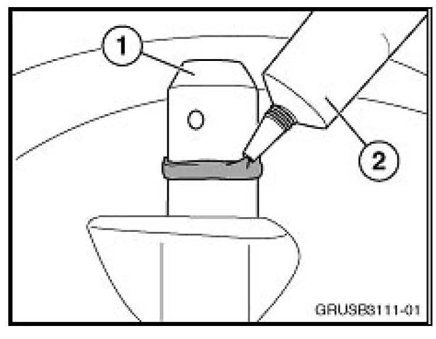
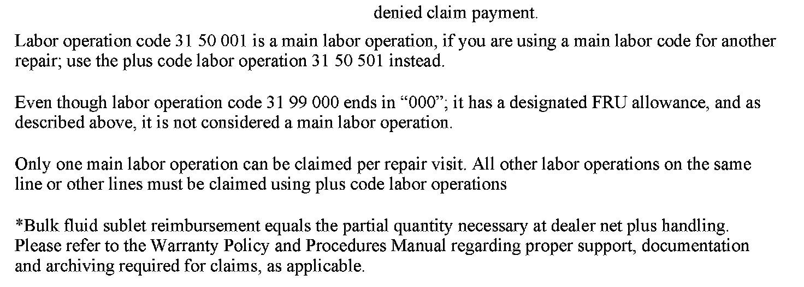

Drivetrain - Oil Leak From Front Differential Vent
SI B31 01 11Front Axle
June 2011
Technical Service
SUBJECT
Oil Leak from Front Differential Vent
MODEL
E83 with the N52K engine
SITUATION
Oil is leaking from the front of the vehicle. The oil is coming out of the vent for the front differential.
CAUSE
Excessive pressure in the front differential is forcing gear oil out of the vent (1). The symptom is more prevalent with colder outside temperatures.
PROCEDURE
Remove the front differential and install a modified vent line to the existing vent on the differential. Refer to Repair Instruction RA 31 50 001 for removal of the front differential. Install the vent hose (P/N 31 50 7 628 084) over the vent cap (P/N 31 50 7 628 085), and secure the breather hose to the vent cap with the supplied hose clamp.

Clean the vent (1) of all oil and debris before installing the vent cap with breather hose. Apply RTV silicone sealer (2) around the base of the vent and install the vent cap/breather hose. Tighten down the set screw on the vent cap.
The base of the vent cap will seal against the differential vent. The upper portion of the cap (1) is larger to allow the venting of the differential. Ensure that there is no RTV sealer blocking the 2mm hole in the differential vent (2).
Reinstall the front differential and route the installed vent hose up between the intake manifold and the air cleaner. Route the vent hose rearward towards the bulkhead and point the open end of the vent hose down to prevent water and debris from getting into the vent line. Once the vent hose (1) is positioned, use wire ties to secure the vent hose to the purge line (2) and again at the support brace (3).
PARTS INFORMATION

WARRANTY INFORMATION